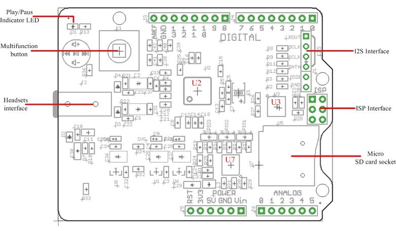
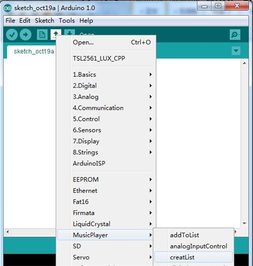
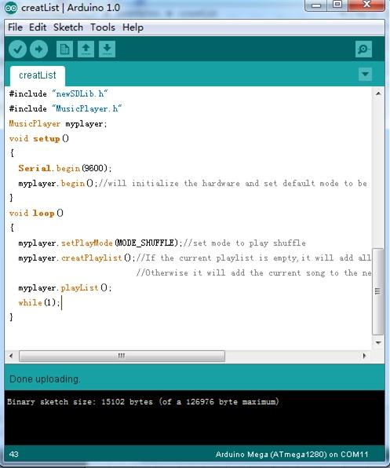
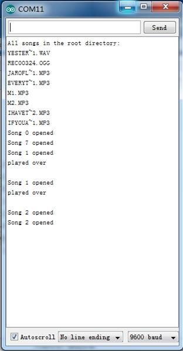
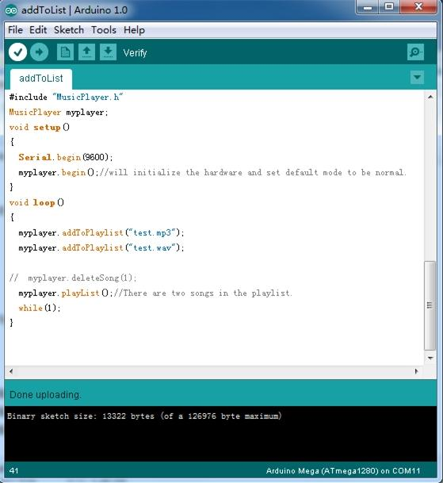
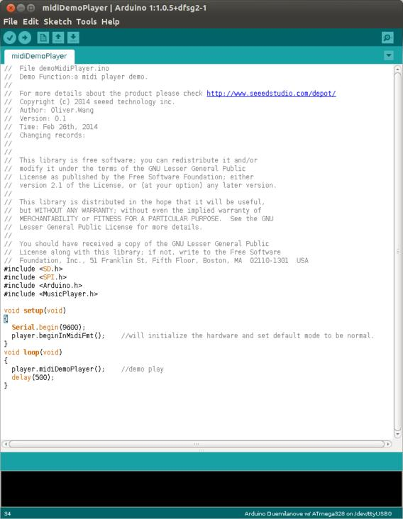

Time to build your real-time MIDI instrument/music player! It can play many format including MP3,WMA,WAV,AAC,MIDI,Ogg VorbisThe. Music Shield is an audio encoder/decoder compatible with Arduino, Seeeduino, Seeeduino Mega and Arduino Mega. It is based on the VC1053B chip, which enabled it to play sound files from SD card and do short-time recording as well. You can also use it to play MIDI notes by slightly changing its hardware installations. Due to the SPI communication mode, it keeps a minimum number of IO port that facilitates users’ own developments of this device. Additionally, the new multifunction button provides greater convenience for users to control.
Notice: The recording function works with Seeeduino Mega and Arduino Mega only. And the maximum size SD card you can use is 2GB.

Multifunction button: Change volume and select songs
Play/Pause indicator LED (GREEN)：Blinks while playing.
Headsets interface: It can drive 16 ohm or 32 ohm earphone and could serve as a external audio input port.
Micro SD card: can be FAT16 or FAT32, The maximum size SD card you can use is 2GB.
U2: VS1053B IC,Ogg Vorbis/MP3/AAC/WMA/FLAC/MIDI audio codec.
U3,U7: 74VHC125 IC, Quad Buffer.
I2S: for digital audio input/output.
ISP interface: for bringing SPI port when using with Mega series products.
Pins usage on Arduino
Pins Used for Play Control:
D3 - receiving signal from button for Volume Up;
D4 - receiving signal from switch for Next Song function;
D5 - receiving signal from switch for Play&Stop and Record function;
D6 - receiving signal from switch for Previous Song function;
D7 - receiving signal from button for Volume Down.
D8 - Green Led instructions;
Pins Used for SPI Interface:
D10 - SPI Chip Select;
D11 - SPI MOSI;
D12 - SPI MISO;
D13 - SPI SCK;
Pins Used for VS1053 Interface:
A0 - Reset of VS1053;
A1- Data Require of VS1053;
A2 - Data Select of VS1053;
A3 - Chip Select of VS1053;

Note:
1. If you want to use MIDI function, you need to change the hardware installation.
2. If you changed the hardware installation in order to use MIDI function, you are not able to use playback & recording functions until you restore it to the original condition.
1. Make sure there are songs in the micro SD card;
2. Download Music shield V2.0 library
3. Unzip and copy the folder to Arduino’s library path: ..\arduino-1.0\libraries;
Demo 1: Play songs (e.g. in shuffle mode)
In order to use the playback function, you need to create a playlist first.
1. Restart the Arduino IDE. Open “creatList” example via the path: File --> Examples --> MusicPlayer --> creatList as below.

2. Set the play mode. In “creatList”, the function we use is described as follow.
Name: setPlayMode(unsigned char playmode);
Function: Set the play mode. There are four modes you can set: MODE_NORMAL、 MODE_SHUFFLE、 MODE_REPEAT_LIST、 MODE_REPEAT_ONE. Each mode stands for different playing orders.

3. Select the type of Arduino board that you are using by the path: Tools --> Board --> for example Arduino UNO.
4. Select the correct serial port you are using by the path: Tools --> Serial Port --> for example COM3.
5. Upload the code. Click to Serial Monitor when “Done uploading” appears, you will find the order of songs is randomized on the list.

When press multifunction button to up or down, the volume will change. Of course, you can try others play modes.
.
Demo 2: Play selected songs
1. This demo will show you how to play part of the songs from all songs in the SD card. Open the “addToList” example via the path: File --> Examples --> MusicPlayer --> addToList.

2.Select songs from the playlist.You just need to list songs you want to play by name correctly in the function addToPlayList(char *songName) .
But you must ensure that the song has been stored in the SD card and the format of those songs must be one of MP3,WMA,WAV,AAC,MIDI,Ogg Vorbis.
3.Upload code. When you complete the upload,new add songs will be played.
Demo 3: Control Volume by analog port
1．Plug the Grove-Base Shield onto the Music shield, Connect the Grove socket of the Rotary and anolog port 4 of the Base Shield with a Grove cable. You can change to
the digital port as well. But don't forget to change the port number in the definition of the demo code at the same time. 
2. Open the “analogInputControl” example and upload it onto your Arduino Board.
3. Rotate the knob to change music volume.
Demo 4: Record music:(Only support ATmega1280 and ATmega2560 based board)
1. Upload any sketch in Music Shield library, for example the sketch "creatList". Open the Serial Monitor and it will play audio files on SD card.
2. Press down the multifunction button for 5 seconds, then the indicator LED will light off.
3. Press down the multifunction button for 5 seconds again, then the music shield will begin to record, the green indicator LED will blink.
4. Quickly press down the multifunction button again, it will stop recording.
5. Record will be played in the last place.
The VS1058X's real time MIDI mode:
The "real time MIDI mode",in which it will instantly execute MIDI commands send to it through either SPI or UART,can be enabled with the method below:
Method:
At the beginning,send a small software patch through SPI port.
/*software patch for MIDI Play*/
const unsigned short gVS1053_MIDI_Patch[28]={
/*if you don't let GPIO1 = H,please send this patch by spi*/
0x0007, 0x0001, 0x8050, 0x0006, 0x0014, 0x0030, 0x0715, 0xb080, /* 0 */
0x3400, 0x0007, 0x9255, 0x3d00, 0x0024, 0x0030, 0x0295, 0x6890, /* 8 */
0x3400, 0x0030, 0x0495, 0x3d00, 0x0024, 0x2908, 0x4d40, 0x0030, /* 10 */
0x0200, 0x000a, 0x0001, 0x0050,
};
using that function to load:
/*
**@ function name: loadMidiPatch
**@ usage:load a software patch for vs10xx
**@ input:none
**@ retval:none
*/
void VS10XX::loadMidiPlugin(void)
{
int i=0;
Serial.print("load MIDI Plugin...\r\n");
while(i < sizeof(gVS1053_MIDI_Patch)/sizeof(gVS1053_MIDI_Patch[0]))
{
unsigned short addr, n, val;
addr = gVS1053_MIDI_Patch[i++];
n = gVS1053_MIDI_Patch[i++];
while(n--)
{
val = gVS1053_MIDI_Patch[i++];
writeRegister(addr, val >> 8, val&0xff);
}
}
Serial.print("done\r\n");
}
I would like to tell you that there is an open source library called jdksmidi,by which you can make your own MIDI decoder through some small changes.
jdksmidi git-hub page:https://github.com/jdkoftinoff/jdksmidi
we offer you some real time mode MIDI APIs(MusicPlayer.cpp):
midiNoteOn()
midiNoteOff()
midiWriteData()
Now,it's time to build your real-time MIDI instrument/music player in any format(single-channel or multi-channel).
Your contribution is appreciated.
A demo MIDI player was add to the latest library.
MIDI Demo(upload the code. When completed, you will hear Fancy MIDI music):

Music Shield Eagle Files
Music Shield Schematic.pdf
VS1053 IC.pdf
Music Shield V2.0 libraries
MIDI number to note reference list: